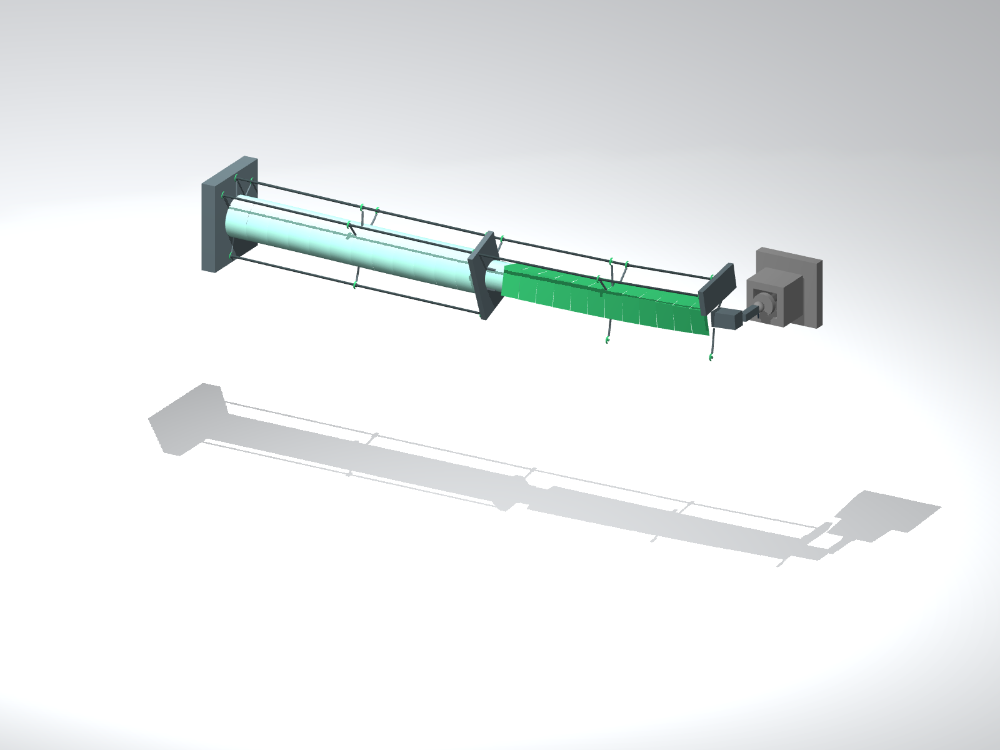
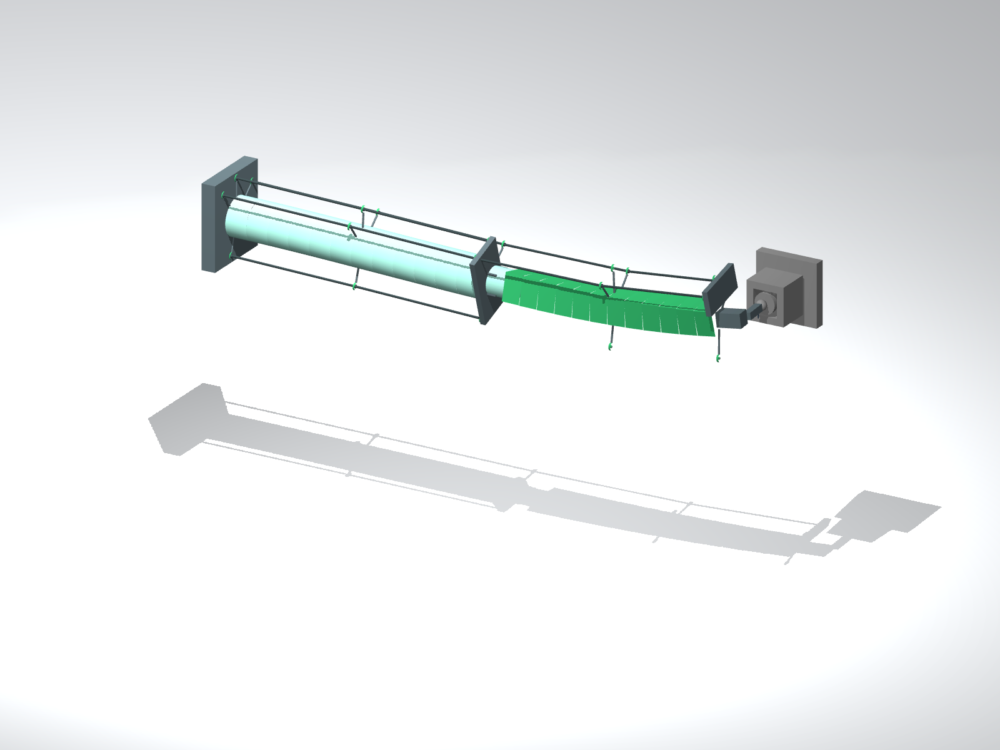
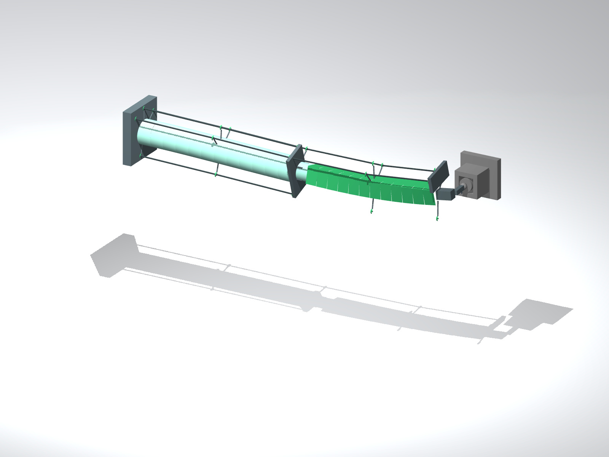
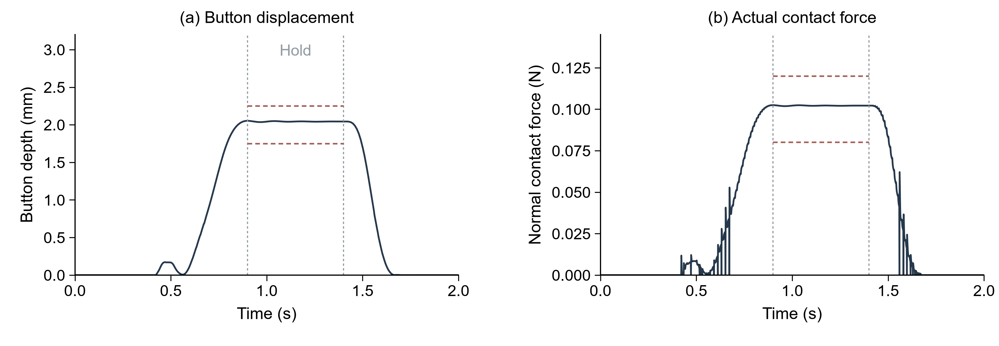

Recorded native states of T09 show approach, maximum travel and holding; plots use actual button displacement and contact force in the specified hold window. T04 tracking and T10 feedback controls are available as separate execution alternatives. Videos are rendered directly from archived states; camera, source time, force cues and playback rates are documented outside the image.